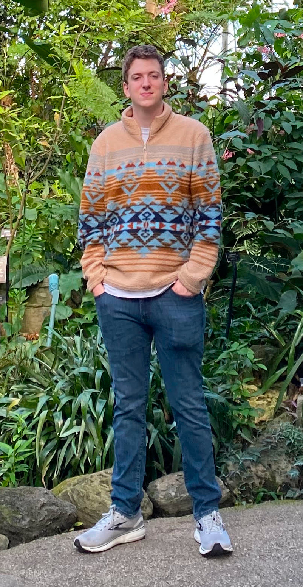

Hi, my name is Travis
About Me
Hi, my name is Travis and I'm interested in solving complex problems using a combination of computer science and math. My background consists mainly of mainly pure/applied math and computer science at the University of South Carolina, and I'm currently obtaining my PhD in CS at UW-Madison. Currently, I've been interested in machine learning algorithms and has been my main focus at Madison. In my recent past, I've done number theory and biomathematical modeling work.
My Current Projects
Linear Support Vector Machine with Adam Optimizer - C++, no outside libraries
August 2024
In my Mathematical Foundations of ML class, we covered a wide range of topics, one of which was Kernel Support Vector Machines. Using what I had learned from this class and previous calculus knowledge, I coded a linear SVM by solving the primal using lagrange multipliers. However, I wasn't satisfied with the results as I originally used a constant learning rate. If my learning rate was too large, my decision boundary wouldn't converge to the optimal, but if too small, took an unreasonable amount of time. I experienced the same problem when I implemented an exponential learnign rate, and so I learned about Adam from this article (even though Adam has it's own hyperparameters). I used validation testing to stop training early. The code for this project can be found here.

Reinforcment Learning by Q-Learning, snake - C++, no outside libraries
July - Early August 2024
Although I had no knowledge of reinforcement learning besides the basics, I wanted to give it a try. From this article, I learned about Q-learning through an example of teaching a taxicab the shortest distance to pickup and drop off passengers and decided to apply what I'd learned to create a model that can play the classic video game snake. I carefully thought about how to model the state efficiently so that training would be as fast as possible and used the symmetry of the square to reduce the state space. In the end, I successfully created models that have a >99% completion rate on 4x4 boards, although the code works for any board size less than 10x10. The code for this project can be found here.

Previous Work (Recent to Old)

SAMSA-Masamu Program
November 2022 - March 2023
For the latter half of November, I attended the Masamu Advanced Study Institute (MASI) and the associated conference in Maputo, Mozambique and found other mathematicians to collaborate on a pure maths problem of our choice. I explored a problem I previously worked on during my REU at Auburn, finding a closed solution to the Frobenius Coin problem in three variables. After arriving back in the states, we continued our work and in the end theorized a geometric algorithm to partition the FC problem into 4 main cases, each having an infinite amount of subcases, and visualized the algorithm in Python. I found an exact equation for the second layer of each case, and the rest of was passed on to future REU students to complete.

Rutgers Discrete Mathematics and Theoretical Computer Science (DIMACS) REU
June 2022 - Sept 2022
During this REU (Research Experience for Undergraduates), I developed software to simulate the thermal fluctuations of small linear strands of DNA using C++. This involved calculating eigenvectors and eigenvalues to determine the paths of least resistance for base pairs and the probability that any base pair would randomly move. My output files were pdb files, which could be visualized in PyMOL. I also analyzed large amounts of empirical energy deformation data using Python. Along with using this data to calculate the step parameters, I was able to generate heat maps showing the flexibility of step parameters as well as the interdependence between any two step parameters.

Auburn University's REU in Algebra and Discrete Mathematics
June 2021 - July 2021
During this REU, I worked on two research projects, both related to the Frobenius Coin problem. During the first half of my summer, I theorized and proved a solution for a version of the FC problem in the Gaussian integers, publishing the work in Geombinatorics in April of 2022. During the latter half, I worked with a team on finding a closed-form solution to the classical FC problem in three variables. Working off past student's work, we corrected their theorem and provided strong computational evidence for our version. I presented our work virtually at SAMSA (Southern Africa Mathematical Sciences Association) in Nov. 2021.
Contact Me
If you'd like to get into contact with me, please reach out on one of the platforms below.
Template from Rosacodes
Linear SVM with Adam Optimizer/Mini-batch GD
Training data from two multivariate normal distributions along with the learned decision boundary plotted with gnuplot.
I learned the concepts and math behind support vector machines in my Mathematical Foundations for ML course, which I will explain breifly. Given labeled data drawn from two distinct class distributions, what is the best decision boundary? I will first talk about the linear case, and then how kernel SVM differs. SVMs take the approach that the best decision boudnary is that which splits the classes directly down the "middle", hoping this has the best results when generalizing to new data. Another way of putting this is that the decision boundary should be equal distance from both classes. SVM models this distance by requiring all data be outside some margin around the decision boundary. Initially, this seems fine, however, what if the data has outliers or is not completely linearly separable? This leads to the distinction between hard-margin SVM and soft-margin SVM. Hard-margin SVM requires that all data be outside the margin, which soft-margin SVM does not, but introduces penalties for datapoints that lie inside the margin. Looking at the picture above, you can deduce that I must have used soft-margin SVM as my data is not linearly separable.
Therefore, the goal of soft-margin SVM is to just maximize the width of the margin subject to the penalties of including datapoints inside the margin. Skipping over some math, maximizing the width turns into minimizing the square of the decision boundary. We can turn our constrained optimization problem into an unconstrained problem using Lagrange multipliers. Now that we have an unconstrained optimization problem, we can easily solve this using gradient descent as the optimization problem is convex and our objective is quadratic. Note that if you don't want a linear decision boundary, you can map your data into a different space and preform SVM on the (usually higher dimensional) data. However, instead of defining a mapping, the lagrangian dual of the problem can be considered and in this formulation, only the dot product (kernel) between data points needs to be defined instead of the actual mapping. Kernel functions save computation time and space and are sometimes required as mappings can be infinite dimensional (ex. RBF kernel). This is commonly referred to as the kernel trick.
I first chose to implement this using mini-batch gradient descent with a constant learning rate, however, I was not satisfied with the speed of learning on large datasets (> ~10,000,000 datapoints). I then implemented an exponential learning rate, which was better, but still had similar problems. After some online research, I chose to implement Adam, a version of gradient descent that provides a dynamic learning rate on a per parameter basis. While I did not dive into why Adam works, the implementation was quite easy. Since we are already calculating the gradient for gradient descent, updating the first and second moments of each parameter is a simple calculation. After another simple calculation for bias correction the final updated parameter value is again, a simple calculation. While Adam does have it's own hyperparameters, I found that they required much less tuning than constant and exponential learning rates.
All my work so far had been on multivariate normal data I had generated myself, and so I wanted to test my work on real world data. I found an almost linearly separable dataset on forged banknotes. I first preprocessed the 4-dimensional data using Linux's sed, awk, and shuf commands and then wrote a bash script to split the data into 60% training, 20% testing, and 20% validation datasets. The learned decision boundary had a ~0.978 accuracy, misclassifying only 6 datapoints.
This project, along with the already processed banknote data and use instructions, can be found here.
Q-Learning
Above is a top to bottom, left to right output of a model trained on a 4x4 board printed in the terminal. S represents the snake, F the fruit, and E empty.
The first step was to define how I will represent states. Along with keeping a board and a count of empty cells per row (to efficiently add fruit to a random position), I kept a string which held the information of the fruit and snake locations with a left pointer keeping track of the tail. The fruit position is always the first two characters, and the snake starting from the right, going back until the value of the left pointer. For the example in the picture, the string after moving down is "321121" with the left pointer equaling 4. The state would be the first two characters (fruit) and the last two characters (snake).
Now, the state space must be defined. By using backtracking, one could generate all possible states by considering the head of the snake in each square. However, this would lead to many more states than necessary! I will give an explanation for a 4x4 board. By utilizing reflections, the head of the snake need actually only be considered in three squares instead of 16 as seen in the picture.

From group theory, I learned that the reflections of a square are mathematically described by the dihedral group of order 8. Notice that cells 1 and 3 do not require all 8 reflections, but 2 does. While the dihedral groups have only 2 generators, I represent all reflections as combinations of horizontal, vertical, and diagonal reflections. When iterating through all possible snake positions, if the head of the snake does not land in the 1, 2, or 3 in the upper left hand corner, I reflect the snake and keep track of the reflections used. This way, when training I can use a simple lookup table to get the reflected state that exists in the state space and get the appropriate reflected action in O(1) time. For a 4x4 board, this is more than a 4x reduction in state space! The below graphic visualizes the process.

The action space is quite easy to define as it is just the four cardinal directions in which the snake can move. Next, I needed to define the rewards for actions the snake can take. If the snake wins or dies, it should get a large amount of positive/negative points respectively. If the snake eats a fruit, it should get a decent amount of points. To prioritize not wasting time, if the snake moves without winning, dying, or eating a fruit, it should lose a small amount of points. Now we just have to train our model, which corresponds to populating and updating the state x action space (qtable) according to the following equation
qtable[state][action] = (1 - α) * qtable[state][action] + α * (reward + γ * max(qtable[newState])).
The first term determines how much of the old value to keep. The second term updates the entry with the reward for taking the action, and the maximum of the action space of the next state. Note that the very last term is important as it allows for the back propogation of data back to earlier states. For example, if taking a certain action in some state will lead to winning 10 moves down the line, this term allows that action to be learned.
Looking at the results below, we can see a direct correlation to the number of epocs with the win percentage. However, we can make training even faster. When creating the qtable, instead of having all 0 initial entries, we can check to see if the four cells surrounding the head are occupied. If they are, then this state leads to death no matter what action taken, and this entry be populated with a large negative value. Looking at the results, we see the model learns to win and grow the snake slightly faster and than before. The data show below is an average over 10,000 simulations.


The entire project, models differing in the number of training epocs and initial qtable, data for the above graphs, and use instructions can be found here.
Classical Frobenius Type Problems
What is the maximal angular sector containing all gaussian integers inside it's bounds described by the combination of two non-negative gaussian integers (complex numbers with non-negative integer parts) with other non-negative gaussian integers? This was the question I chose to tackle when I first arrived in Auburn. For a better understanding, let's walk through an example. Consider the points a = 5i and b = 2+7i. Plotting all points which satisfy
{(r+si)a + (t+ui)v | r,s,t,v ≥ 0}
yield the dots in the above picture. The angular sector must have bounds that follow the angles of the two original points, a and b. In the picture, these are the green and red lines. The problem reduces to finding their point of intersection, the red point. You'll notice that above the green and red lines, there are no spaces in the lattice (every space has a blue dot), which means that the red point defines a valid angular sector. However, is it maximal? Clearly if you move the green line down an integer, there will be blue dots missing, and so the green bound is maximal. For the red bound, I have plotted the same line shifted by one integer in purple. You can see that there are blue dots missing above the purple line, and so the red line is maximal. You can see the code used to generate the graph here.
I theorized an equation for the red dot under certain conditions (at least one real/imaginary part of a or b must be zero) and proved certain parts under relative primality conditions. However, when you restrict the combination to be with only natural numbers (t and u must be 0), I theorized and proved that the red dot exists, and is (0,0), if and only if the determinant of a and b has magnitude 1. We published this in April 2022.
At the start of July, another student and I took on another project that had been passed down to REU particpants for 10+ years, another frobenius problem. Given three natural numbers with coprimality conditions, is there a closed formula for the last number that cannot be expressed as linear combination with non-negative coefficients? We were given an equation and partially finished proofs and asked to finish the job. Eventually, I realized the equation was wrong, corrected it, and while I wasn't able to prove it, provided strong computational evidence using Mathematica that my version was correct. I virtually presented my work under the advisement of my REU mentor at the SAMSA 2021 Conference.